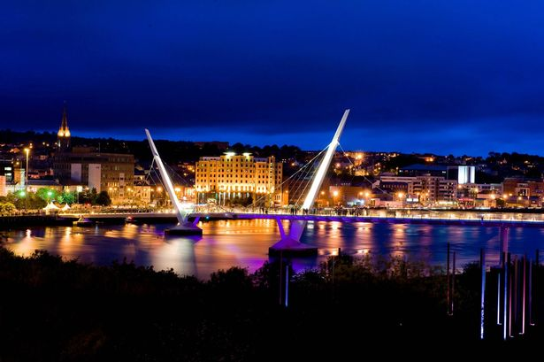

Welcome to Derry Hotel Finder

Greetings, and welcome to the Derry Hotel Finder Website. The website where you can find all the spectacular hotels based within the historical city of Derry, discover all the amazing offerings these hotels provide for you, and give you a wide range of opportunities and activities to do whilst you or your family are staying in the most beautiful part of the North of Ireland.
The City of Derry provides you a wide range of opportunities for you to know more about the history of the city. These include…
- Taking the City Walking Tours to sightsee along the historic walls and city centre to know more about how Derry has changed from the troubles to now.
- See the amazing attractions Derry has to offer from the Guildhall Square and St. Columb’s Cathedral to the famous murals of Free Derry Corner and the most popular TV Show, Derry Girls.
- Spend a fortune on our wide range of retail stores in our popular Folyeside and Richmond Shopping Centres, such as Sports Direct, H&M, Primark, TOPMAN and many more.
- Sit back, relax, and enjoy our variety of entertainment from the spectacular performances in the famous Millennium Forum to our traditional Irish music in our local bars like the Gweedore bar.
- Dine with family and friends at our fancy cafes and restaurants scattered all over the city. These range from Scullery Café on Waterloo Street and Pyke N’ Pommes along the Strand Road, to the Shipquay Restaurant on Shipquay Street to Mandarin Palace along the Quay.